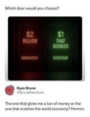
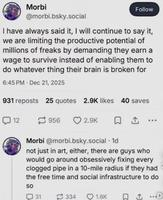

0
0
0


0
0
Scientific American's Elizabeth Anne Brown recently "polled the great art houses of Europe" about whether they'd had any recent experiences with mold in their collections. Despite the stigma that keeps many institutions silent, she found that extremophile "xerophilic" molds are quietly spreading through museums and archives, thriving in low-humidity, tightly sealed storage and damaging everything from textiles and wood to manuscripts and stone. An anonymous Slashdot reader shares an excerpt from the article: Mold is a perennial scourge in museums that can disfigure and destroy art and artifacts. [...] Consequently, mold is spoken of in whispers in the museum world. Curators fear that even rumors of an infestation can hurt their institution's funding and blacklist them from traveling exhibitions. When an infestation does occur, it's generally kept secret. The contract conservation teams that museums hire to remediate invasive mold often must vow confidentiality before they're even allowed to see the damage.
But a handful of researchers, from in-house conservators to university mycologists, are beginning to compare notes about the fungal infestations they've tackled in museum storage depots, monastery archives, crypts and cathedrals. A disquieting revelation has emerged from these discussions: there's a class of molds that flourish in low humidity, long believed to be a sanctuary from decay. By trying so hard to protect artifacts, we've accidentally created the "perfect conditions for [these molds] to grow," says Flavia Pinzari, a mycologist at the Council of National Research of Italy. "All the rules for conservation never considered these species."
These molds -- called xerophiles -- can survive in dry, hostile environments such as volcano calderas and scorching deserts, and to the chagrin of curators across the world, they seem to have developed a taste for cultural heritage. They devour the organic material that abounds in museums -- from fabric canvases and wood furniture to tapestries. They can also eke out a living on marble statues and stained-glass windows by eating micronutrients in the dust that accumulates on their surfaces. And global warming seems to be helping them spread. Most frustrating for curators, these xerophilic molds are undetectable by conventional means. But now, armed with new methods, several research teams are solving art history cold cases and explaining mysterious new infestations...
The xerophiles' body count is rising: bruiselike stains on Leonardo da Vinci's most famous self-portrait, housed in Turin. Brown blotches on the walls of King Tut's burial chamber in Luxor. Pockmarks on the face of a saint in an 11th-century fresco in Kyiv. It's not enough to find and identify the mold. Investigators are racing to determine the limits of xerophilic life and figure out which pieces of our cultural heritage are at the highest risk of infestation before the ravenous microbes set in.
Read more of this story at Slashdot.
Longtime Slashdot reader AmiMoJo shares a report from Reuters: Fully electric car sales in December overtook petrol for the first time in the European Union, even as policymakers proposed to loosen emissions regulations, data showed on Tuesday. U.S. battery-electric brand Tesla continued to lose market share to competitors including China's BYD and Europe's best-selling group Volkswagen, data from the European auto lobby ACEA showed.
Car sales throughout Europe sustained a sixth straight month of year-on-year growth, with overall registrations, a proxy for sales, hitting their highest volumes in five years in Europe in 2025, though they remained well below pre-pandemic levels. [...] December registrations of battery electric, plug-in hybrid and hybrid electric cars were up 51%, 36.7% and 5.8%, respectively, to account collectively for 67% of the bloc's registrations, up from 57.8% in December 2024.
Read more of this story at Slashdot.
The Linux kernel community has formalized a continuity plan for the day Linus Torvalds eventually steps aside, defining how the process would work to replace him as the top-level maintainer. ZDNet's Steven Vaughan-Nichols reports: The new "plan for a plan," drafted by longtime kernel contributor Dan Williams, was discussed at the latest Linux Kernel Maintainer Summit in Tokyo, where he introduced it as "an uplifting subject tied to our eventual march toward death." Torvalds added, in our conversation, that "part of the reason it came up this time around was that my previous contract with Linux Foundation ended Q3 last year, and people on the Linux Foundation Technical Advisory Board had been aware of that. Of course, they were also aware that we'd renewed the contract, but it meant that it had been discussed."
The plan stops short of naming a single heir. Instead, it creates an explicit process for selecting one or more maintainers to take over the top-level Linux repository in a worst-case or orderly-transition scenario, including convening a conclave to weigh options and maximize long-term project health. One maintainer in Tokyo jokingly suggested that the group, like the conclave that selects a new pope, be locked in a room and that a puff of white smoke be sent out when a decision was reached.
The document frames this as a way to protect against the classic "bus factor" problem. That is, what happens to a project if its leader is hit by a bus? Torvalds' central role today means the project currently assumes a bus-factor of one, where a single person's exit could, in theory, destabilize merges and final releases. In practice, as Torvalds and other top maintainers have discussed, the job of top penguin would almost certainly currently go to Greg Kroah-Hartman, the stable-branch Linux kernel maintainer. Responding to the suggestion that the backup replacement would be Greg KH, Torvalds said: "But the thing is, Greg hasn't always been Greg. Before Greg, there was Andrew Morton and Alan Cox. After Greg, there will be Shannon and Steve. The real issue is you have to have a person or a group of people that the development community can trust, and part of trust is fundamentally about having been around for long enough that people know how you work, but long enough does not mean to be 30 years."
Read more of this story at Slashdot.
French lawmakers have voted to ban social media access for children under 15 and prohibit mobile phones in high schools, positioning France as the second country after Australia to impose sweeping age-based digital restrictions. The Guardian reports: The lower national assembly adopted the text by a vote of 130 to 21 in a lengthy overnight session from Monday to Tuesday. It will now go to the Senate, France's upper house, ahead of becoming law. Macron hailed the vote as a "major step" to protect French children and teenagers in a post on X. The legislation, which also provides for a ban on mobile phones in high schools, would make France the second country to take such a step following Australia's ban for under-16s in December. [...] "The emotions of our children and teenagers are not for sale or to be manipulated, either by American platforms or Chinese algorithms," Macron said in a video broadcast on Saturday. Authorities want the measures to be enforced from the start of the 2026 school year for new accounts.
Former prime minister Gabriel Attal, who leads Macron's Renaissance party in the lower house, said he hoped the Senate would pass the bill by mid-February so that the ban could come into force on September 1. He added that "social media platforms will then have until December 31 to deactivate existing accounts" that do not comply with the age limit. [...] The draft bill excludes online encyclopedias and educational platforms. An effective age verification system would have to come into force for the ban to become reality. Work on such a system is under way at the European level.
Read more of this story at Slashdot.
An anonymous reader quotes a report from Bloomberg: Investors are souring on the bonds of software companies that service industries ranging from automotive to finance as fast-paced artificial intelligence innovations threaten to upend their business models. [...] Bond prices tumbled as advances in artificial intelligence rack up. Google announced plans to launch an AI assistant to browse for internet surfers Wednesday while a customer support startup, Decagon AI Inc., raised a new round of funding. Such developments are further stoking the angst about AI displacing enterprise software companies, driving a selloff in the sector's stocks and bonds across the globe.
[...] Some say the AI fears weighing on software companies are overdone. "While point-solution software faces disruption risk, large company platforms with complex workflows and proprietary data are better positioned to benefit from AI-driven automation," wrote Union Bancaire Prive in its investment outlook for 2026 released this week. But a recent report by EY-Parthenon flagged that in the UK last year, software and computer services firms issued the highest number of warnings on earnings among listed firms. "Software multiples have compressed amid uncertainty around whether incumbents can defend pricing power and sustain growth in an AI-first work-flow environment," wrote Bruce Richards, chief executive officer and chairman of Marathon Asset Management, in a LinkedIn post last week.
Read more of this story at Slashdot.
Apple is forcing Patreon to move all remaining creators onto Apple's in-app purchase subscription system by November 2026 "or else Patreon would risk removal from the App Store," reports TechCrunch. "Apple made this decision because Patreon was managing the billing for some percentage of creators' subscriptions, and the tech giant saw that as skirting its App Store commission structure." The tech giant initially told Patreon that it must do so by November 2025, but the deadline was pushed back. From the report: "We strongly disagree with this decision," its blog post states. "Creators need consistency and clarity in order to build healthy, long-term businesses. Instead, creators using legacy billing will now have to endure the whiplash of another policy reversal -- the third such change from Apple in the past 18 months. Over the years, we have proposed multiple tools and features to Apple that we could've built to allow creators using legacy billing to transition on their own timelines, with more support added in. Unfortunately, Apple has continually declined them," it says.
Creators can read more about the transition plan on Patreon's website. It has also built several tools to support these changes, including a benefit eligibility tool to see who has paid or is scheduled to pay, tier repricing tools, and gifting and discount tools to offer payment flexibility. An option for annual-only memberships will be introduced before November 2026 as well. The commission on in-app purchases and subscriptions is 30% on Apple's system, but "drops to 15% for a subscription that has been ongoing for more than a year," notes MacRumors. Patreon lets creators either raise prices only in its iOS app to cover Apple's fee or keep prices the same by absorbing the cost, while iPhone and iPad users can avoid the App Store commission entirely by paying through Patreon's website instead.
Read more of this story at Slashdot.
The housing shortages plaguing Western cities today stem partly from the abandonment of a 19th century urban governance model that enabled cities like Berlin, New York and Chicago to expand rapidly while keeping real house prices flat and homes increasingly affordable.
A new analysis by Works in Progress argues that Victorian-era urban management wasn't laissez-faire but rather a system carefully designed to align private profit with public benefit. Infrastructure monopolies -- whether privately franchised, operated as concessions or municipally owned -- funded themselves entirely through user fees rather than public subsidies, and were structured so that building more capacity was the path to greater returns.
Landowners enjoyed a fundamental right to build when profitable, and height limits applied uniformly across entire cities rather than varying by neighborhood, meaning dense development remained legal everywhere. The system began collapsing after 1914, however. Inflation proved fatal to self-funding transport because governments found it politically impossible to raise controlled prices year after year. By the 1960s, trams had vanished from Britain, France and the U.S.
Meanwhile, differential zoning gradually banned densification in established neighborhoods, and rent controls decimated private homebuilding in many countries. In Britain, average house prices fell from twelve times earnings in 1850 to four times by 1914. They have since climbed back to nine times earnings. The article argues roughly 80% of postwar price increases trace directly to restrictions on building.
Read more of this story at Slashdot.
For decades, researchers have noted that cancer and Alzheimer's disease are rarely found in the same person, fuelling speculation that one condition might offer some degree of protection from the other. Nature: Now, a study in mice provides a possible molecular solution to the medical mystery: a protein produced by cancer cells seems to infiltrate the brain, where it helps to break apart clumps of misfolded proteins that are often associated with Alzheimer's disease. The study, which was 15 years in the making, was published on 22 January in Cell and could help researchers to design drugs to treat Alzheimer's disease.
"They have a piece of the puzzle," says Donald Weaver, a neurologist and chemist at the Krembil Research Institute at the University of Toronto in Canada, who was not involved in the study. "It's not the full picture by any stretch of the imagination. But it's an interesting piece." [...] A 2020 meta-analysis of data from more than 9.6 million people found that cancer diagnosis was associated with an 11% decreased incidence of Alzheimer's disease. It has been a difficult relationship to unpick: researchers must control for a variety of external factors. For example, people might die of cancer before they are old enough to develop symptoms of Alzheimer's disease, and some cancer treatments can cause cognitive difficulties, which could obscure an Alzheimer's diagnosis.
Read more of this story at Slashdot.
When asked directly whether people actually like Experian, Alex Lintner, the credit bureau's CEO of Software and Technology, offered an unusual defense in an interview: "First of all, we're not Palantir, so we don't do reputation scores." Speaking on The Verge's podcast, Lintner conceded that consumers who have poor credit scores through "life's circumstances" sometimes direct their frustration at Experian, though he argued the company enables vital access to credit for 247 million Americans.
The 10-year company veteran said Experian has built its own large language model and about 200 AI agents for internal use, but consumer data remains entirely walled off from public AI systems. On security, Lintner said Experian hasn't experienced a data breach in a decade -- the last occurred two weeks into his tenure. When competitor Equifax suffered its massive breach, Equifax actually paid Experian to help protect affected consumers' identities.
Read more of this story at Slashdot.
There are reports that a legitimate Microsoft email address -- which Microsoft explicitly says customers should add to their allow list -- is delivering scam spam. ArsTechnica: The emails originate from no-reply-powerbi@microsoft.com, an address tied to Power BI. The Microsoft platform provides analytics and business intelligence from various sources that can be integrated into a single dashboard. Microsoft documentation says that the address is used to send subscription emails to mail-enabled security groups. To prevent spam filters from blocking the address, the company advises users to add it to allow lists.
According to an Ars reader, the address on Tuesday sent her an email claiming (falsely) that a $399 charge had been made to her. âoeIt provided a phone number to call to dispute the transaction. A man who answered a call asking to cancel the sale directed me to download and install a remote access application, presumably so he could then take control of my Mac or Windows machine (Linux wasn't allowed)," she said.
Online searches returned a dozen or so accounts of other people reporting receiving the same email. Some of the spam was reported on Microsoft's own website. Sarah Sabotka, a threat researcher at security firm Proofpoint, said the scammers are abusing a Power Bi function that allows external email addresses to be added as subscribers for the Power Bi reports. The mention of the subscription is buried at the very bottom of the message, where it's easy to miss.
Read more of this story at Slashdot.
Google is rolling out an "auto browse" AI agent in Chrome that can navigate websites, fill out forms, compare prices, and handle tedious online tasks on a user's behalf. Bloomberg reports: The feature, called auto browse, will allow users to ask an assistant powered by Gemini to complete tasks such as shopping for them without leaving Chrome, said Charmaine D'Silva, a director of product. Chrome users will be able to plan a family trip by asking Gemini to open different airline and hotel websites to compare prices, for instance, D'Silva explained.
"Our testers have used it for all sorts of things: scheduling appointments, filling out tedious online forms, collecting their tax documents, getting quotes for plumbers and electricians, checking if their bills are paid, filing expense reports, managing their subscriptions, and speeding up renewing their driving licenses -- a ton of time saved," said Parisa Tabriz, vice president of Chrome, in a blog post.
[...] Chrome's auto browse will be available to US AI pro and AI Ultra subscribers and will use Google Password Manager to sign into websites on a user's behalf. As part of the launch, Google is also bringing its image generation tool, Nano Banana, directly into Chrome.
The company said that safeguards have been placed to ensure the agentic AI will not be able to make final calls, such as placing an order, without the user's permission. "We're using AI as well as on-device models to protect people from what's really an ever-evolving landscape, whether it's AI-generated scams or just increasingly sophisticated attackers," Tabiz said during the call.
Read more of this story at Slashdot.
An anonymous reader quotes a report from Politico: The interim head of the country's cyber defense agency uploaded sensitive contracting documents into a public version of ChatGPT last summer, triggering multiple automated security warnings that are meant to stop the theft or unintentional disclosure of government material from federal networks, according to four Department of Homeland Security officials with knowledge of the incident. The apparent misstep from Madhu Gottumukkala was especially noteworthy because the acting director of the Cybersecurity and Infrastructure Security Agency had requested special permission from CISA's Office of the Chief Information Officer to use the popular AI tool soon after arriving at the agency this May, three of the officials said. The app was blocked for other DHS employees at the time.
None of the files Gottumukkala plugged into ChatGPT were classified, according to the four officials, each of whom was granted anonymity for fear of retribution. But the material included CISA contracting documents (PDF) marked "for official use only," a government designation for information that is considered sensitive and not for public release. Cybersecurity sensors at CISA flagged the uploads this past August, said the four officials. One official specified there were multiple such warnings in the first week of August alone. Senior officials at DHS subsequently led an internal review to assess if there had been any harm to government security from the exposures, according to two of the four officials. It is not clear what the review concluded.
Read more of this story at Slashdot.
Amazon is discontinuing its Amazon One palm recognition ID system for stores later this year, the company informed users. From a report: The company will discontinue Amazon One services at retail businesses on June 3, 2026, according to a support page for the service and email messages to customers. "In response to limited customer adoption, we're discontinuing Amazon One, our authentication service for facility access and payment," an Amazon spokesperson said. "All customer data associated with Amazon One will be securely deleted after the service ends."
The move coincides with a sweeping pullback from Amazon's physical retail experiments. Amazon announced Tuesday that it's closing all of its Amazon Go and Amazon Fresh locations, a total of 72 stores nationwide, concentrating its efforts instead on its Whole Foods Market locations and grocery delivery from Amazon.com. Amazon One launched in 2020 as a way to help speed up in-store entry and payments, identifying customers who opted-in and eliminating the need for them to present a credit card to pay. It often worked in conjunction with the company's Just Walk Out technology, which uses cameras and sensors to let customers avoid using a checkout line.
Read more of this story at Slashdot.
An anonymous reader shares a report: Apple is being sued by Reincubate, which makes the Camo smartphone webcam app. It has filed a lawsuit against Apple in a U.S. federal court in New Jersey, accusing the company of anticompetitive conduct and patent infringement. The suit alleges that Apple copied Camo's technology, integrated similar features into iOS, and used control over its software ecosystem to disadvantage Reincubate's Camo product.
Reincubate's Camo and Camo Studio apps allow iOS or Android phones to function as webcams for Mac and PCs. The company launched Camo in 2020. In 2022, Apple introduced Continuity Camera, a feature that enables iPhones to serve as webcams for Macs but works only within Apple's device ecosystem. According to the lawsuit, Apple copied patented features from Camo and built them into iOS to "redirect user demand to Apple's own platform-tied offering."
Read more of this story at Slashdot.
mspohr shares a report: When Sir Tim Berners-Lee invented the world wide web in 1989, his vision was clear: it would used by everyone, filled with everything and, crucially, it would be free. Today, the British computer scientist's creation is regularly used by 5.5 billion people -- and bears little resemblance to the democratic force for humanity he intended.
Since Berners-Lee's disappointment a decade ago, he's thrown everything at a project that completely shifts the way data is held on the web, known as the Solid (social linked data) protocol. It's activism that is rooted in people power -- not unlike the first years of the web.
This version of the internet would turbocharge personal sovereignty and give control back to users. Berners-Lee has long seen AI -- which exists only because of the web and its data -- as having the potential to transform society far beyond the boundaries of self-interested companies. But now is the time, he says, to put guardrails in place so that AI remains a force for good -- and he's afraid the chance may pass humankind by. Berners-Lee traces the web's corruption to the commercialization of the domain name system in the 1990s, when the .com space was "pounced on by charlatans." The 2016 US elections, he said, revealed to him just how toxic his creation could become. A corner of the web, he says, has been "optimised for nastiness" -- extractive, surveillance-heavy, and designed to maximize engagement at the cost of user wellbeing.
His answer is Solid, a protocol that gives users control through personal data "pods" functioning as secure backpacks of information. The Flanders government in Belgium already uses Solid pods for its citizens. On AI, his optimism remains dim. "The horse is bolting," he says, calling for a "Cern for AI" where scientists could collaboratively develop superintelligence under contained, non-commercial oversight.
Read more of this story at Slashdot.
Julie Bort / TechCrunch : US-based AI startup Arcee releases Trinity Large, a 400B-parameter open-weight model that it says compares to Meta's Llama 4 Maverick 400B on some benchmarks — Many in the industry think the winners of the AI model market have already been decided: Big Tech will own it (Google, Meta …
Sri Muppidi / The Information : Sources: OpenAI is in talks to raise up to $30B from Nvidia, less than $10B from Microsoft, and $10B-$20B from Amazon as part of a $100B funding round — OpenAI is lining up huge checks from some of its biggest tech partners, as it seeks to raise up to $100 billion to fund growing demand for its AI.
Jonathan Stempel / Reuters : Google agrees to pay $135M to settle a proposed class action lawsuit alleging that the tech giant programmed Android to illegally collect users' cellular data — Google will pay $135 million to settle a proposed class action by smartphone users who accused Google of programming …
Tom Knowles / The Guardian : The UK's Advertising Standards Authority bans some Coinbase ads, finding them “irresponsible” for suggesting crypto as a solution to the cost of living crisis — Advertising Standards Authority says firm advised by George Osborne ‘trivialised risks of cryptocurrency’
Todd Bishop / GeekWire : LinkedIn's Q2 revenue rose 11% YoY, topping $5B for the first time, giving LinkedIn an annual run rate of $20B+; Satya Nadella said paid video ads grew 30% YoY — Remember when everyone said Microsoft overpaid for LinkedIn? Nearly a decade later, the $26.2 billion “overpriced” …
Dylan Butts / CNBC : Samsung reports Q4 revenue up 24% YoY to ~$65.6B, vs. ~$65.28B est., and operating profit up 200%+ to ~$14.06B, driven by memory chip price surge and HBM demand — Samsung Electronics shares rose 2.4% Thursday after the company reported an over threefold surge in fourth-quarter operating profits …
Robert McMillan / Wall Street Journal : Google says it took legal action to take down dozens of domains and disrupt the residential proxy network of Chinese company Ipidea, widely used by bad actors — Company targets global network employed by hackers that often use devices running in homes of everyday Americans
Dylan Butts / CNBC : SK Hynix announces a new US-based “AI Company” from a restructuring of its California-based subsidiary Solidigm, and commits at least $10B to the new entity — South Korean memory giant SK Hynix announced Wednesday that it will set up a new U.S.-based company focused …
Russell Brandom / TechCrunch : In Meta's Q4 earnings call, Mark Zuckerberg says it plans to start shipping new models and products throughout 2026 and hints at “agentic shopping tools” — Mark Zuckerberg says Meta users will start to see new AI models and products from the company in a matter of months.
Tom Warren / The Verge : Satya Nadella says Windows 11 reached 1B users during Q2, growing over 45% YoY and at a faster rate than Windows 10 did — Windows 11 hit the milestone in the recent holiday quarter. … Windows 11 now has 1 billion users. … “Windows reached a big milestone, 1 billion Windows 11 users …
Chance Miller / 9to5Mac : Sebastiaan de With, co-founder of the iPhone camera app Halide who previously freelanced for Apple, says he has joined Apple's Human Interface Design team — Halide and Lux co-founder and designer Sebastiaan de With announced today that he is joining Apple's human interface design team.
Anna Tong / Forbes : Sources: OpenAI is considering using biometric verification like World's eyeball scanning Orb for its planned social network to ensure its users are real people — OpenAI is quietly building a social network and considering using biometric verification like World's eyeball scanning orb …
Hannah Lang / Reuters : Sources: the White House will meet with banks and crypto firms on Monday to discuss a path forward for crypto legislation stalled by a clash between the sectors — The White House on Monday will meet with executives from the banking and cryptocurrency industries to discuss a path forward …
Samantha Subin / CNBC : ServiceNow reports Q4 revenue up 20.5% YoY to $3.57B, vs. $3.53B est., and subscription revenue up 21% YoY to $3.47B; NOW drops ~3% after hours — ServiceNow topped Wall Street's fourth-quarter estimates after the bell on Wednesday, but shares fell more than 3%. — Here's how the company performed versus LSEG estimates:
Kara Carlson / Bloomberg : Tesla says it agreed to invest $2B in xAI for preferred shares as part of xAI's Series E, despite a shareholder vote in November that failed to win approval — Tesla Inc. reported fourth-quarter profit that surpassed expectations, showing the automaker is making progress toward overcoming rising costs …
0